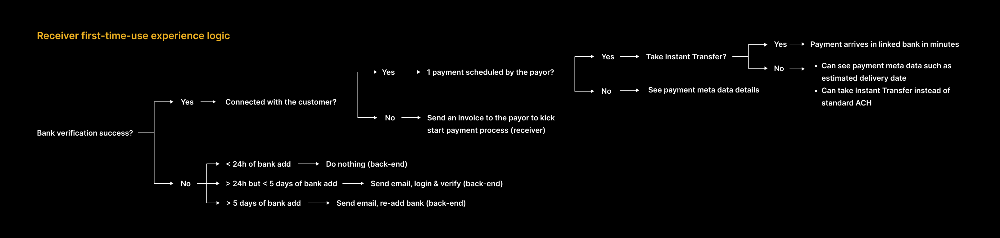
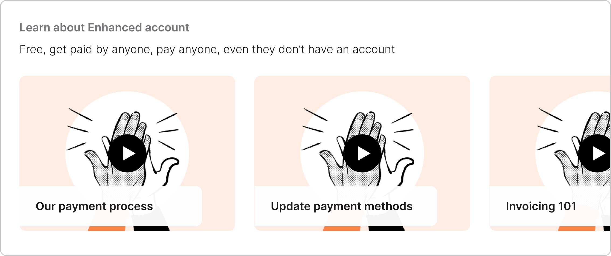
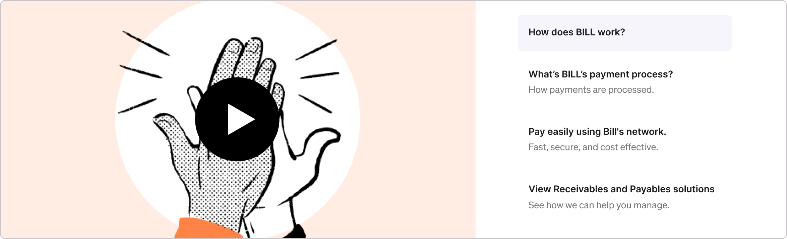
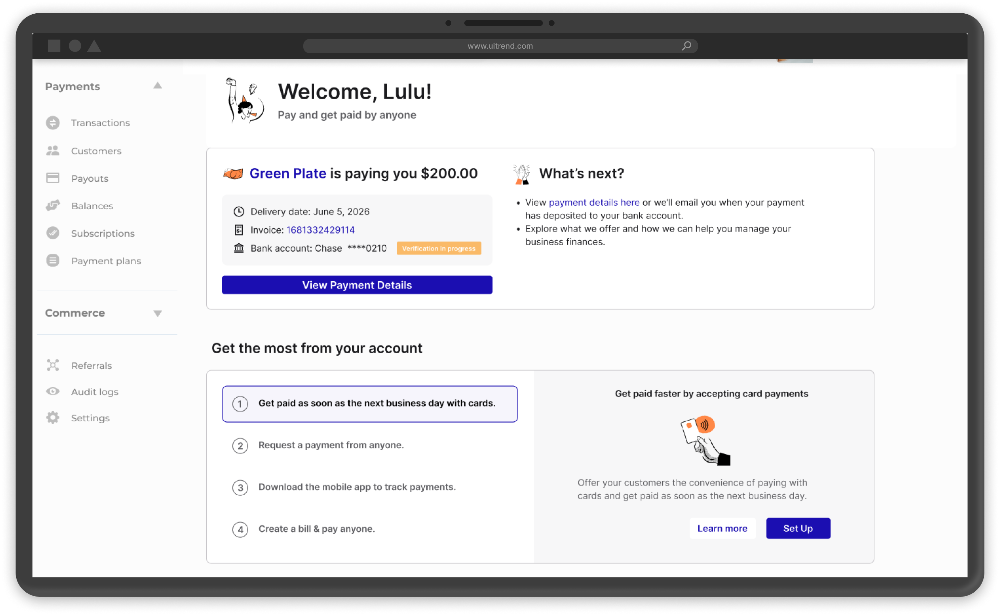
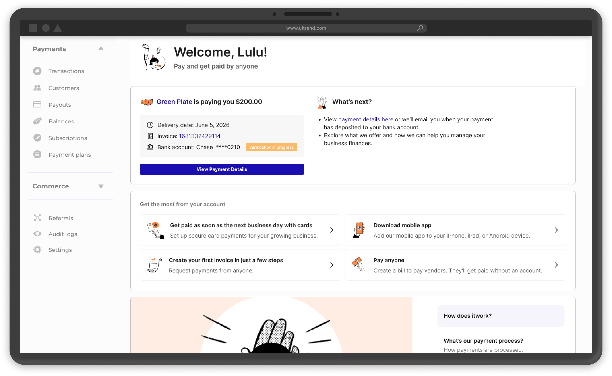
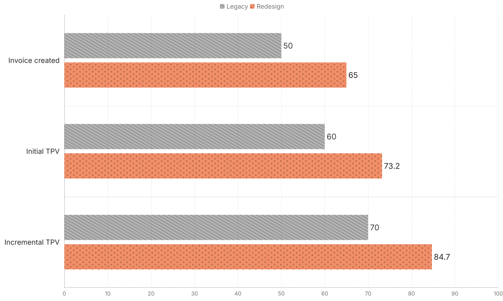

Receiver Onboarding · Network Growth · A/B test
Answering “Where is my money?”
Redesigning first-time use for new receivers
- Problem:
- Receivers come to the platform with a very narrow first job to be done: get paid by a customer. At the time, the platform had millions of receiver accounts, but only a small fraction were transacting, and most transacting receivers stopped using the platform after three months.
- Design process:
- Design audit → qualitative + survey research → concept in Figma → concept testing → iteration and design lock → launch-ready UX.
- Scope:
- From the moment a customer receives a sign up email to the moment when the fund lands in their linked bank.
- Research:
- A 10-participant qualitative study and a 1,056-respondent survey plus a 10-participant concept testing.
- Hypothesis:
- By redesigning the receiver dashboard to clarify payment status, offer best next steps and explain product value, we will improve receiver activation and retention.
- Team:
- 1 product manager, 1 product designer, 2 researchers, 1 content designer, 2 engineers.
01Where it got hard
The platform had millions of receiver accounts, but only a small fraction ever transacted, and most stopped using the platform within three months. Receivers are asked by their customers to create a free account to get paid, so they arrive with money waiting, and the first-time experience couldn’t answer the only question they had: where is my money, and when does it land?
Payment uncertainty created real emotional drag.
"When I meant cumbersome, there was like a lot of stuff that I knew I didn't need… I don't understand why all this stuff is here, I'm just trying to get paid."
Timing clarity mattered more than feature discovery.
"The biggest challenges are, timing, understanding when a payment is going to be made… It's nice to see a due date but that doesn't mean that that is when we will receive payment."
The payment process itself wasn't intuitive.
"I had gotten a notification on my phone that I have an invoice… I didn't know exactly what that meant."
How I found out. I went through the receiver experience myself, creating a payor account on our testing platform to pay a fictional receiver and mapping the journey. With a researcher, I ran a 10-participant study from signup to first payment (5 SMBs, 5 independent contractors) and a survey of recently signed-up receivers (1,056 responses). Customer experience and sales helped surface blockers, such as bank verification failures delaying payment.
Talk to customers
Qual: 10 interviews;
Quant: survey (1,056 responses)
Map customer journey
Elevate the Peak, fill the Pit, mark the Transition, reorder.
Look for edge cases
From CX support tickets and from talking to Sales.
Receivers don't know what value the platform offers.
A majority of survey respondents said they signed up because a customer asked them to.
No single source-of-truth for payment status, causing them to ask "Where is my money?"
The biggest sources of friction were uncertainty about payment timing, confusion about whether action was required, and a lack of clarity about what the platform was doing on the user's behalf.
Receivers are uncertain about what actions to take after signing up.
Some receivers thought they were receiving a one-time payment and were done.
Problem Statement
How may we clarify payment status, offer best next steps and introduce product value to new receivers after they sign up?
02The decision I made, and why
I redesigned the “Get Started” page, where new receivers land after signing up, to be payment-status-first: answer “how and when will I get paid?” before teaching anything else. The product tour became optional and moved later. The redesign also moved the experience onto the design system.
Why: timing clarity beat feature discovery in every research signal, and invoicing, network and upsell messaging at the moment of maximum anxiety was noise. The journey map shows that moment.

The hard part was that “where is my money?” has a different answer in every state: whether a payment is on the way, whether an invoice exists for it, how the receiver gets paid (ACH or instant transfer), and whether bank verification succeeded. I mapped those variables into a decision tree so every state got a clear answer and a next step.

A payment status widget answers “where is my money?” in each of those states:
Concept testing tightened it before launch: payment status and “what happens next” language became more explicit, bank-verification messaging explained that delays could be normal, and card pricing was made less ambiguous.

03What I tried and dropped
- Video tutorials. Dropped for launch because of production cost.
- A mandatory walkthrough. Made optional: seven of ten participants thought it made sense, but not all wanted to go through it.
- Early invoicing, network and upsell messaging. Pulled back from the moment of peak anxiety. “Network” only made sense to people when it was tied to their actual payment.
- The Concept A layout. Six of ten preferred Concept B as more logically ordered and easier to learn from, so I adopted it.
- Vague language. Rewritten: “Advanced” sounded expensive or complex, and “arrival date” didn’t say when money would actually hit the bank.
Tutorials: a row of video cards (A) versus one hero video with common questions (B).


Next best actions: a vertical list (A) versus a two-column grid (B).


What we showed to the users during a test.


04What changed
Measured head-to-head against the legacy first-time-use flow: +30% invoices created, +22% initial TPV (Total Payment Volume), +21% incremental TPV. Charts are for illustration purposes only.

The strongest takeaway for me was that comprehension changed behavior: once receivers could more clearly see how and when they would get paid, more of them created invoices, completed the flow, and moved more money through the platform.
It compounded, too. Improving first-time understanding became a growth lever: the invoicing flow later became a major paid-tier entry point and contributed meaningfully to paid-tier acquisition and receivable TPV. Trust and clarity at first use keep paying.